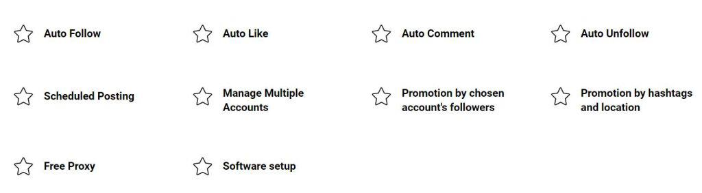

If you’re looking for more information before you buy Bigbangram, you came to the right place. In this Bigbangram review, we’ll take a look at the bot, how it works, the services & features, and if it’s worth it.
Starting with the basics…
What is Bigbangram?
Bigbangram is an Instagram bot that automates a wide range of services, such as: auto-follow, auto-comment, auto-likes, and much more. On their website, they refer to the bot as an Instagram promotion tool. The bot works mostly online, although there is a version you can download and install on your computer.
Is Bigbangram Legit?
I’m happy to say Bigbangram is a legit Instagram bot. Their service seems to work as advertised, and you can certainly use their services to promote your Instagram account. It’s not a scam.
Of course, there are some things that you need to be aware of before you buy the tool, and we’ll discuss those later on. But when it comes down to it, Bigbangram is a legit tool with many satisfied users.
Bigbangram Features
Bigbangram offers a wide range of Instagram features. In addition to the automated activities we mentioned earlier, the tool also provides other services too, such as:
Limits & Customization
When it comes to Instagram bots, it’s always important to make sure the bot doesn’t go a little too crazy and do more than it should. Instagram is constantly looking out for repetitive behavior, so you need to mix things up a little bit. The limits provide you with an easy way to limit the actions of the bot.
You can customize limits based on a 24 hour or one hour period. For example, you can tell the bot to follow a maximum of 200 people a day, or something along those lines. I always recommend putting the limits even lower than what the company recommends, to be on the safe side.
Another cool thing about this tool is you can either choose a membership or subscribe to each service individually. For example, if you only want the auto-follow bot, then you can buy that bot and nothing else. It’s nice to see tools providing people with flexible options.
The memberships essentially package all the individual services into a monthly subscription, which ends up being a little cheaper in the long run.
Speaking of memberships…
Bigbangram Payment Plans

These prices are for the Instagram Promotion Bot, not the other services, which have their own prices.
There are four options; one dollar trial, Standard, VIP, and x6 High Speed Mode.
- 3 – day trial, $1
- Standard – $15/month
- VIP – $85/month
- x6 mode – Custom, starting at $22 a month.
As you can imagine, most people will settle for the trial and the Standard membership. The free trial includes most of the features that are in the other payment plans.
The main difference between the trial and the Standard is with Standard you can setup your first campaign for free. Most people will move to Standard when the trial expires.
You should know the VIP and x6 modes are custom, so you’ll need to reach out to the team to see if you qualify for these modes. But you can start the trial or Standard whenever you want.
It’s also nice to have the option to try out the tool with a free trial. Bigbangram’s 3-day trial is includes access to pretty much all of the major services.
Overall, Bigbangram is an affordable Instagram bot. It’s actually one of the cheaper ones we had the pleasure of reviewing in a long time. The Standard membership at $15 a month is usually enough for most people to get that boost of activity their Instagram needs.
Does Cheap Mean Low Quality?
Since the price is low, it’s logical to assume the service quality will be low as well. It seems like most people have mixed opinions about Bigbangram. Some people say the platform is a scam and recommend avoiding it, while others say it’s incredibly useful.
There are arguments for both sides, and we’ll talk more about that in the downsides section. Overall, however, the quality seems to be good. If you take the necessary precautions, I don’t doubt the tool can be used to build your following on Instagram.
Having said that, there are some things you need to know about.
Bigbangram Pros: What We Liked
Here’s what we liked about this Instagram bot.
Plenty of Auto-Features 👍
With Bigbangram you can get all the main auto features, such as likes, follows, un-follow, and comment. These are incredibly helpful for growing a following and saving you time. I also liked how you configure the limits of each service.
Wide Range of Filters 👍
Another great thing about this platform is it provides you with a wide range of filters. With the right configuration, it will be easy to build a highly targeted following on Instagram.
For example, there’s a gender filter, media age, skip private users, skip 10% of accounts, skip users with a certain number of followers or min posts, skip business profiles, and a lot more. You can also add users to the blacklist.
Good Amount of Anti-Spam Functions (Safe!) 👍
When it come sot Instagram bots, you’re probably worried that Instagram will ban your account. While this is a risk, the actual chances of it happening are quite low.
If Instagram detects strange activity on your account, it will ask you to reset your password. Nevertheless, it’s important to use a bot that has plenty of anti-spam filters, and Bigbangram has a few worth talking about.
For instance, night-mode. When night-mode is enabled, the bot will pause during the hours people are most likely to be asleep.
Additionally, there’s the Skip 10% of Accounts filter that also reduces spam-like activity. Combine those two features with manually-configured low limits, and Instagram will have no idea that you’re using a bot.
Post Upload and Schedule Module. 👍
I love it when a bot includes a service to schedule and upload posts. With the Instagram Schedule Post module, you can not only schedule and upload posts, but also upload videos and resize photos.
This module makes it easy to copy photos from your computer into your Instagram account, saving you a lot of time. The downside is this is an extra feature, not included in the bot subscription.
P.S. Check out our post on top Instagram schedulers.
Direct Messaging Service 👍
This feature allows you to either send a automated messages to new fans, based on the triggers you create. For example, you can send out mass-messages to all your fans, only new fans, and other users.
With this feature you can also manage direct messages and reply to incoming messages in seconds, from your computer. It’s a great service for sending out advertising new promotions and what not.
Affordable Plans 👍
As you may recall, the paid subscriptions are very affordable. There’s also the option to subscribe to one specific service only which is great.
Most people will choose the Instagram Promotion Bot which costs $15 – $85 a month and includes every service. The Standard plan only costs $15 which is crazy cheap for the services provided.
Detailed Help Center 👍
You’ll be happy to know the platform does have a dedicated support center with plenty of tutorials on how to complete various tasks with the program.
For instance, they’ll walk you through how to create a promotion, the best (and safest) Instagram practices, how to add appropriate filters, and a lot more. The good news is anyone can access the help center. They even have a helpful chart to set your limits based on your account’s size.
But on the other hand…
Bigbangram Cons: What Could Be Improved…
Based on other user’s complaints and my own opinions, here’s what I didn’t like about the platform.
Inconsistent Growth 👎
Oddly enough, a lot of users complain that the bot stops delivering results after they pay for a subscription. It seems like (based on reviews) that the trial works great and shows growth, but once you upgrade, the growth stops there. Naturally, users are quite frustrated with this issue, because they paid for a service only to have it stop delivering results.
It’s hard to say what’s going on in these cases. It may be the platform’s fault, or it may be the user failed to properly configure the bot. Regardless, you should be aware of the issue. The good news is that most people who try out the trial seem to see good results.
No Detailed Growth Reports 👎
You would expect some growth reports such as new followers and what not, but this platform doesn’t provide many detailed reports.
On the other hand, they do track conversion rates, as well as the number of new followers and un-follows. But that’s it. I wish the tool would track more data. At least a graph showing the new followers over time would be nice.
Multiple Individual Payment Plans 👎
In the payment section we mentioned most services are included in the Instagram Promotion Bot. On the other hand, there are many other features, such as the posting module, that require separate subscriptions.
In other words, you have to subscribe to the bot, and the subscribe to whatever other service you need. When you combine the price of the bot and all the other services, it comes to quite a bit.
Here’s a list of the extra services:
- Instagram Direct Message – $9/month
- Comment Tracker – $9/month
- Posting Module – $13/month
- Social Media Management $75/month
- There’s also the option to buy packages of Likes or Comments.
Of course, these are extra services, and you don’t have to use them, but they’re nice to have. Choosing services can be a bit complicated, especially from inside the member’s area.
The Bigbangram Bottom Line
To summarize our Bigbangram review, based on what I could see, and the other reviews found online, to me it looks like the platform is legitimate and useful. With the proper configuration, I can definitely see how this tool can help with Instagram growth.
Overall, it’s a decent tool, but due to the downsides, it still doesn’t take our top spot in our recommended Instagram tools. The reasons are; the confusing user-interface, inconsistent results, lack of a proper reporting tool, and the complicated payment system.
If you’re looking for the absolute best bang for your buck, I recommend taking a look at our recommended Instagram tools. With our tools, you can rest assured your account will not only be safe but also see explosive and consistent growth.
Here, let me save you a click. If you’re looking for a great Instagram bot that can manage most of your online activities, I recommend Kenji. The good news is you can create a free trial, no strings attached. Take for a test run, if you like it, upgrade. No pressure.
Thanks for taking the time to read this Bigbanram review and good luck.
You May Also Like: Is Instavast A Good Instagram Bot? Read This Review to Find Out